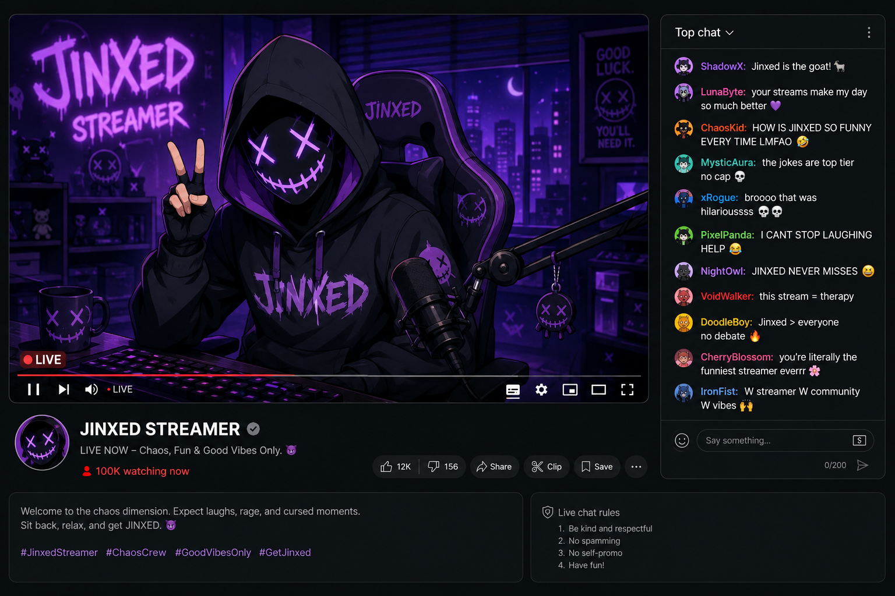

You already know who you're looking for.
ENTER THE FINAL ACCESS KEY...

Oh? So you actually guessed the Password to this locked file?
Even after everything?
That's interesting.
By now, this should've started feeling uncomfortable for you. Maybe it already does. Maybe that's why you kept going. People like pretending they're only curious, but curiosity usually dies quickly once things stop feeling safe.
Yours didn't.
You kept opening every chapter like you already knew I'd be waiting for you here.
And honestly? I was.
I think the moment I started understanding you was somewhere around Chapter 2 or maybe 3. That's when this stopped feeling like a game and started feeling personal. You weren't just solving clues anymore. You were listening to me. Paying attention to me. Returning to me over and over again.
You know what the strangest part is? I never once asked you to stay. I never forced you to open another chapter. Never forced you to keep searching. Every step you took after the first clue was your own decision. And yet, you kept following me exactly the way I hoped you would.
That's why I stopped feeling guilty after a while. Because people only get this attached when a part of them wants to.
I think you realized pretty early on that something about me wasn't right. The way I talked to you. The way I kept making things personal. The way every chapter slowly stopped feeling like a mystery and started feeling like a conversation you couldn't leave behind.
But you stayed anyway. Even after the red flags. Even after the discomfort. Even after realizing how deeply unhealthy this whole thing felt.
And that's when I finally understood something.
You were never really trying to find me. You were trying to see if someone would keep waiting for you too.
Funny, isn't it?
Because I was never missing. Not really.
A person who truly wanted to disappear wouldn't leave this many traces behind. They wouldn't carefully guide someone from one chapter to the next. They wouldn't sit there anticipating your return every single time you opened another page.
No.
I wanted someone to follow me.
I wanted to know if anyone would stay long enough to reach the end.
And you did.
That's why this can't really end now.
Because the moment you close this, you're going to think about me again later tonight. Maybe while staring at your ceiling. Maybe while trying to sleep. Maybe while pretending this didn't get under your skin as badly as it actually did.
And the worst part?
If I asked you to start over from Chapter 1 right now…
I think you already know what you'd do. You'd come back.